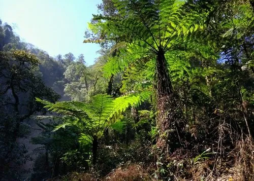

蕨类与裸子植物 · 植物界
中华桫椤 Alsophila costularis

桫椤科桫椤属大型树蕨，主干直立如树、顶端簇生大型羽叶，是现存最古老的蕨类之一，被列为国家二级保护植物。
- 分类
- 门蕨类植物门纲木贼纲目桫椤目科桫椤科属桫椤属
- 栖息环境
- 海拔 800–2000 米的山地沟谷与常绿阔叶林下，喜温暖湿润半阴
- 地理分布
- 中国云南、广西、贵州、四川、西藏；印度、缅甸、泰国
- 保护级别
- 国家二级重点保护野生植物；IUCN 暂无评估
物种志
中华桫椤为桫椤科桫椤属大型树蕨，主干直立，高可达三至五米，表面密被老叶柄残基和褐色鳞片。叶片簇生于主干顶端，二回羽状，大型，长可达两米，羽片披针形，革质，幼叶拳卷。孢子囊群圆形，生于羽片背面小脉上，孢子期夏秋季。
中华桫椤分布于中国云南、广西、贵州、四川、西藏等地，印度、缅甸、泰国也有，多生于海拔八百至两千米的山地沟谷和常绿阔叶林下。它喜温暖湿润和半阴环境，适宜疏松肥沃、排水良好的酸性土壤，不耐寒。主干如树、羽叶如伞，是蕨类中少有的树状类型，对研究蕨类演化具有重要意义；也是优美的观叶植物。由于野生资源因采挖和生境破坏而减少，被列为国家二级重点保护野生植物。
形态与习性
- 株高主干高 3–5 m，树状
- 叶形二回羽状，长可达 2 m
- 孢子期夏秋季，囊群圆形
- 光照喜半阴，忌强光暴晒
- 水分喜湿润，常生于沟谷
- 土壤疏松肥沃的酸性土
- 主要用途观叶植物、科研材料
趣味知识
- 中华桫椤是少数能长成树状的蕨类，主干可高达数米。
- 它的主干表面覆盖着老叶柄的残基，像披了一层棕色的铠甲。
- 桫椤科植物在恐龙时代就已繁盛，被称为植物界的活化石。